Dành cho giáo viên
Theo dõi lớp
| Học sinh / Nhóm | Đã nộp | Cập nhật |
|---|
Bước 1
1 Khởi động
Khám phá Hình ảnh khởi động
Khởi động Cấu trúc điều khiển trong Scratch
An: Ở lớp 6, chúng ta đã biết cách biểu diễn thuật toán bằng cách sử dụng các cấu trúc điều khiển cơ bản. Trong ngôn ngữ lập trình Scratch, có cách nào để biểu diễn các cấu trúc đó không?
Khoa: Giống như hầu hết các ngôn ngữ lập trình, ngôn ngữ lập trình trực quan như Scratch cũng có các khối lệnh tương ứng với các cấu trúc điều khiển.
An: Bạn có thể giới thiệu cho tớ cách biểu diễn các cấu trúc tuần tự, rẽ nhánh và lặp trong Scratch không?
Khoa: Giống như hầu hết các ngôn ngữ lập trình, ngôn ngữ lập trình trực quan như Scratch cũng có các khối lệnh tương ứng với các cấu trúc điều khiển.
An: Bạn có thể giới thiệu cho tớ cách biểu diễn các cấu trúc tuần tự, rẽ nhánh và lặp trong Scratch không?
Ghi bài Khởi động
Sau khi thầy cô chốt, em chép nội dung dưới đây vào vở.
Bước 2 · Hình thành kiến thức mới
2.1 Cấu trúc điều khiển cơ bản
Hoạt động 1 Trò chơi Đoán số
Giả sử em cần xây dựng một trò chơi trên máy tính. Trong trò chơi, em cần tìm một số bí mật mà máy tính đã lấy ngẫu nhiên trong khoảng từ 1 đến 100. Em được đoán nhiều lần cho đến khi đoán đúng số bí mật đó. Mỗi lần em đoán sai, máy tính sẽ cho em biết số em đoán là nhỏ hơn hay lớn hơn số bí mật. Em hãy mô tả kịch bản của trò chơi đó dưới dạng một thuật toán.
Chơi thử trò chơi hoàn chỉnh (chương trình Hình 14.7) trước khi tìm hiểu cách tạo ra nó:
Chơi thử trò chơi hoàn chỉnh (chương trình Hình 14.7) trước khi tìm hiểu cách tạo ra nó:
Đọc hiểu a) Cấu trúc tuần tự
Đọc mục 1a (SGK trang 80). Dựa trên kịch bản đã xây dựng, em sẽ từng bước lập chương trình của trò chơi này bằng ngôn ngữ lập trình trực quan. Nhận xét rằng, trong trò chơi, chỉ cần sử dụng hai biến số: số thứ nhất do máy tính lấy ngẫu nhiên, được đặt tên là số bí mật và số thứ hai do người chơi đoán và nhập vào máy tính là trả lời. Biến này có sẵn trong Scratch. Để đảm bảo các lệnh đọc, ghi và gán giá trị với hai biến trên hoạt động bình thường, em có thể yêu cầu máy tính gán cho số bí mật một giá trị ngẫu nhiên, sau đó hỏi để nhận vào trả lời một giá trị số từ người chơi, rồi hiển thị hai giá trị đó ra. Trong ngôn ngữ lập trình trực quan, cấu trúc tuần tự được thể hiện bằng cách lắp ghép các khối lệnh thành phần theo đúng trình tự của các hoạt động, từ trên xuống dưới, như Hình 14.1b.
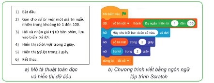
Đọc hiểu b) Cấu trúc rẽ nhánh
Đọc mục 1b (SGK trang 81). Sau khi đảm bảo các biến đã hoạt động đúng, em có thể thay thế các thao tác hiển thị trong kịch bản trên bằng thao tác so sánh hai số và cho biết giá trị của biến trả lời bằng, thấp hơn hay cao hơn giá trị của biến số bí mật: nếu trả lời bằng số bí mật thì thông báo “HOAN HÔ!”; nếu trả lời nhỏ hơn số bí mật thì thông báo “Quá thấp”; nếu trả lời lớn hơn số bí mật thì thông báo “Quá cao”. Nhận xét rằng ba trường hợp “bằng”, “nhỏ hơn” và “lớn hơn” loại trừ lẫn nhau nên không cần kiểm tra cả ba trường hợp đó mà chỉ cần kiểm tra hai lần. Trong ngôn ngữ lập trình trực quan, cấu trúc rẽ nhánh được thể hiện bằng khối lệnh chứa một điều kiện hay một biểu thức lôgic. Tuỳ tình huống, điều kiện này nhận giá trị đúng hay sai, chương trình sẽ định hướng đến khối lệnh tiếp theo để máy tính thực hiện.
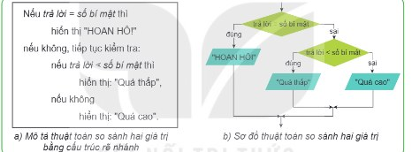
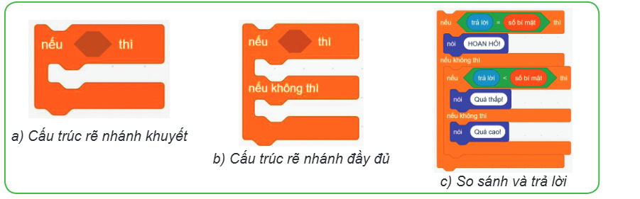
Thử đoạn chương trình Hình 14.3c (số bí mật được đặt sẵn là 45 để dễ kiểm tra): chạy ba lần, lần lượt nhập một số nhỏ hơn, lớn hơn và bằng 45.
Đọc hiểu c) Cấu trúc lặp
Đọc mục 1c (SGK trang 82). Trong trò chơi, việc đoán số không chỉ được thực hiện một lần mà được người chơi thực hiện lặp lại cho đến khi đoán đúng số bí mật. Mỗi khi người chơi đoán sai, máy tính hỏi lại và câu trả lời mới lại được đem ra so sánh với số bí mật. Lưu ý rằng việc lặp lại chỉ thực hiện khi người chơi đoán sai. Điều đó cũng có nghĩa rằng người chơi đoán đúng là điều kiện kết thúc vòng lặp. Thuật toán được mô tả bằng cấu trúc lặp như trong Hình 14.4a và được thể hiện trong ngôn ngữ lập trình trực quan bằng khối lệnh “lặp lại cho đến khi” (Hình 14.4d). Trong ngôn ngữ lập trình Scratch, có ba khối lệnh lặp, bao gồm: lặp với số lần định trước (Hình 14.4b), lặp vô hạn (Hình 14.4c), và lặp có điều kiện kết thúc (Hình 14.4d).
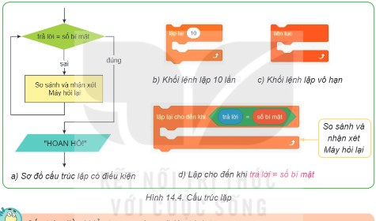
Câu hỏi SGK trang 82
Ghi bài 1. Cấu trúc điều khiển cơ bản
Sau khi thầy cô chốt, em chép nội dung dưới đây vào vở.
Bước 2 · Thực hành
2.2 Thực hành: Xây dựng trò chơi Đoán số
Nhiệm vụ Lập chương trình trò chơi Đoán số
Lập chương trình trò chơi Đoán số như đã được mô tả trong Hoạt động 1. Hướng dẫn: Bước 1. Tạo các biến: tạo biến số bí mật (có thể tạo biến mới hoặc đổi tên biến có sẵn “my variable”); biến trả lời đã có sẵn trong nhóm lệnh Cảm biến. Bước 2. Tạo khung chương trình gồm 6 khối lệnh lắp ghép với nhau theo cấu trúc tuần tự, từ trên xuống dưới (Hình 14.5). Bước 3. Tạo các biểu thức: chọn phép toán và điền các giá trị để có biểu thức “lấy ngẫu nhiên từ 1 đến 100”; chọn phép so sánh “=” và lắp các biến vào chỗ trống để có biểu thức lôgic “trả lời = số bí mật”; lắp ghép các biểu thức vào vị trí phù hợp trong khung chương trình (Hình 14.6a). Bước 4. Tạo khối lệnh rẽ nhánh với điều kiện “trả lời < số bí mật”; chọn từ nhóm Cảm biến các khối lệnh “hỏi” và lắp vào vị trí phù hợp như Hình 14.6b. Bước 5. Hoàn thành chương trình: lắp khối lệnh rẽ nhánh vào khung chương trình; đối sánh thuật toán được mô tả dưới dạng sơ đồ với chương trình hoàn chỉnh ở Hình 14.7.
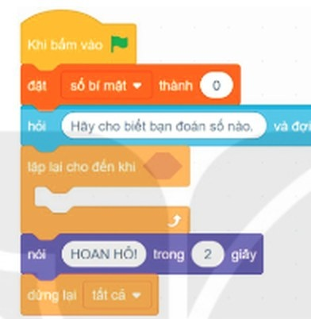
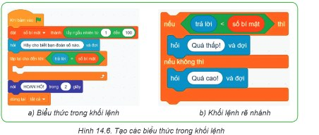
Trên mô phỏng: tạo biến số bí mật; thêm các khối của Hình 14.5 (nháy vạch ▸ để chọn chỗ chèn). Trong ô giá trị hoặc ô điều kiện hình lục giác, bấm ▾ để đặt lấy ngẫu nhiên từ ( ) đến ( ), phép so sánh ( ) = ( ), ( ) < ( ), biến số bí mật hoặc trả lời.
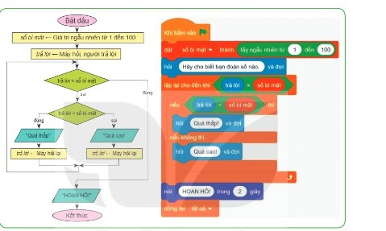
Ghi bài 2. Thực hành
Sau khi thầy cô chốt, em chép nội dung dưới đây vào vở.
Bước 3
3 Luyện tập
Luyện tập Đoạn lệnh và hình vẽ
Em hãy ghép mỗi đoạn lệnh ở hàng trên với kết quả tương ứng mà đoạn lệnh đó vẽ ở hàng dưới trong Bảng 14.1.
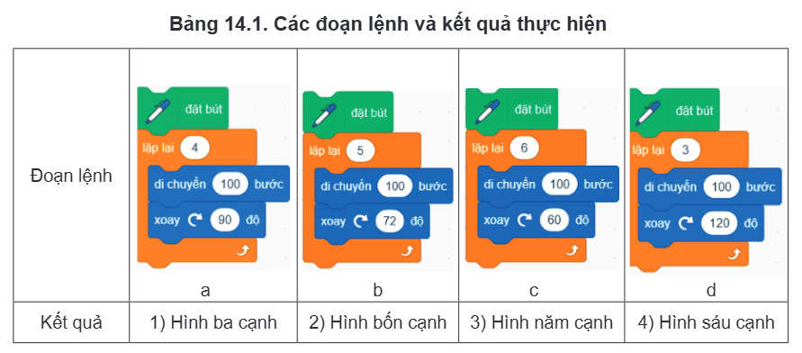
Kiểm tra bằng mô phỏng: sửa hai con số rồi chạy cho từng đoạn lệnh a, b, c, d.
Ghi bài Luyện tập
Sau khi thầy cô chốt, em chép nội dung dưới đây vào vở.
Bước 4
4 Vận dụng
Vận dụng Phương trình ax + b = 0
1. Em hãy ghép các khối lệnh a, b, c, d vào các vị trí 1, 2, 3, 4 ở Hình 14.8 để được chương trình giải phương trình ax + b = 0 trong ngôn ngữ lập trình Scratch với các giá trị a, b nhập từ bàn phím.
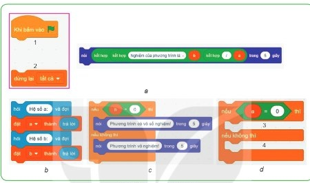
Lắp chương trình trên mô phỏng (biến a, b đã tạo sẵn) và chạy thử với ba trường hợp: a = 2, b = −4; a = 0, b = 0; a = 0, b = 3.
Vận dụng Ước chung lớn nhất
2. Ước chung lớn nhất của hai số không thay đổi nếu thay số lớn bằng phần dư trong phép chia của nó cho số bé. Dựa trên nhận xét đó, ước chung lớn nhất của hai số nguyên không âm có thể được tính theo thuật toán được biểu diễn bằng sơ đồ khối trong Hình 14.9. Em hãy ghép các khối lệnh Scratch trong Hình 14.10 thành chương trình tính ước chung lớn nhất của hai số nguyên không âm.
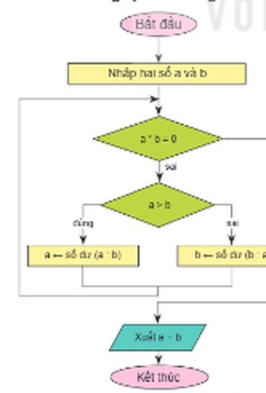
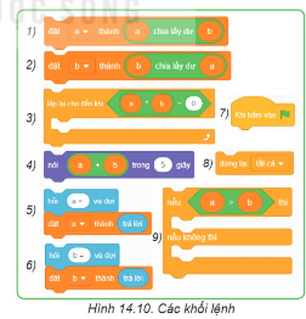
Ghi bài Vận dụng
Sau khi thầy cô chốt, em chép nội dung dưới đây vào vở.